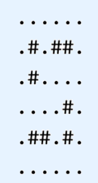

最近lwher迷上了贪吃蛇游戏，在玩了几天却从未占满全地图的情况下，他不得不承认自己是一个弱菜，只能改去开发一款更弱的贪吃蛇游戏。
在开发的过程中，lwher脑洞大开，搞了一个多条蛇的模式。但由于这种模式太难操作，于是他只好改变游戏的玩法，稍微变化一下游戏目标。
新的游戏是这样的：
一些蛇覆盖了一个网格。每个格子要么是一个障碍物，要么是蛇的一部分。每条蛇占据了一条折线(拐角处只能水平和竖直连接)，且只是占据两个格子。蛇与蛇之间不能重叠，蛇也不会与自己重叠。每条蛇还必须满足以下两个条件中的一个：
1、两个端点所在的格子在网格的边界。
2、蛇构成一个环，即两个端点相邻(垂直或水平，不能斜着)，至少要占据4个格子(否则没法形成环)。
给定一个网格，用r x c的字符矩阵描述：‘#’代表障碍物，‘.’代表空地。在满足前面所述的条件下覆盖所有空地，并使得端点在网格边界(即不构成环)的蛇尽量少。（如果一条蛇既构成环，又是端点在边界，那么不计入答案）
例如，以下网格：

可以由下面三种方案覆盖。还有其他的方案，但是没法仅用一条不构成环的蛇就覆盖整个网络的方案。

给定一个网络的描述，输出最少需要多少条不构成环的蛇来覆盖这个网格。如果不存在能够覆盖网格的方案，输出-1。